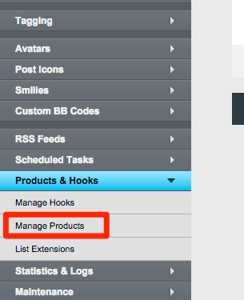
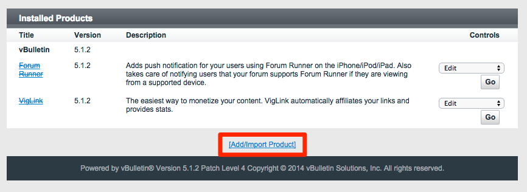
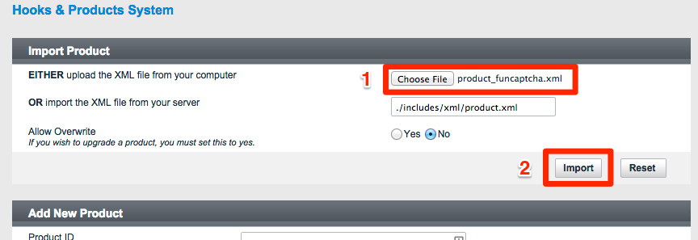
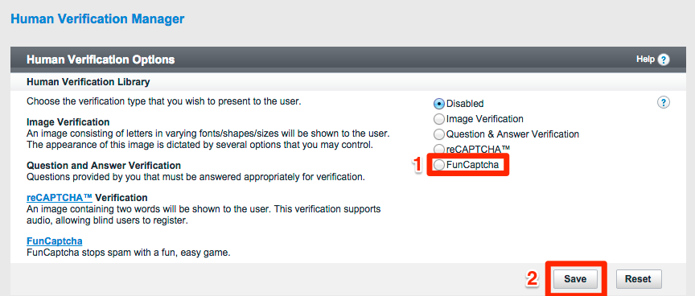
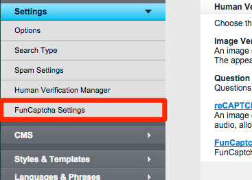
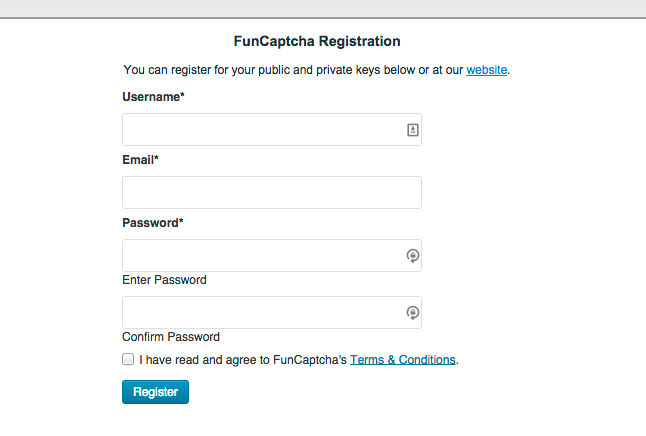
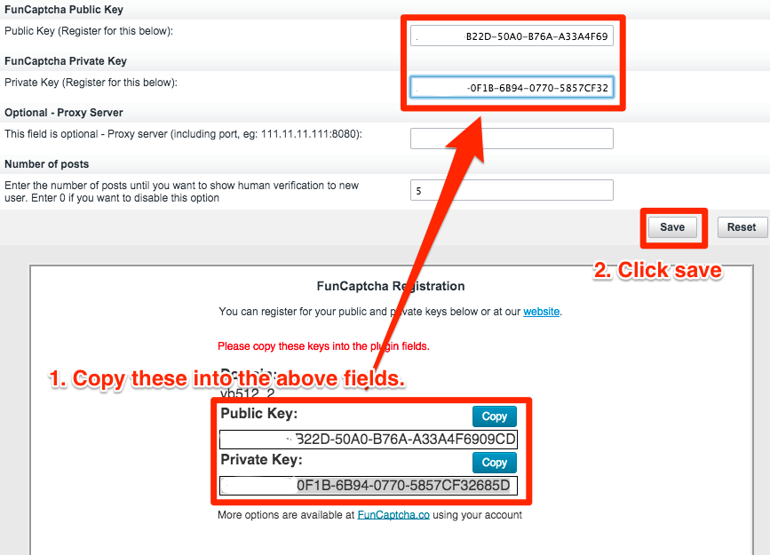
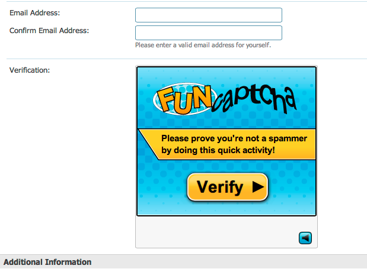

FunCaptcha vBulletin Integration
Install the plugin
- Unzip the plugin archive
- FTP the files from the upload folder to your vBulletin root directory
Upload XML and
configure the plugin
- In your vBulletin
Administrator Control Panel, click on "Plugins & Products" in
the sidebar on the left. Then click "Manage products".

- Click "Add/Import Product"

- Click "Choose File" and
select the xml file.
- Click "Import" button.

- In your vBulletin
Administrator Control Panel, click on "Settings" in
the sidebar on the left. Then click "Human Verification Manager".

- Select "FunCaptcha".
- Click "Save" button.

- In your vBulletin
Administrator Control Panel, click on "Settings" in
the sidebar on the left. Then click "FunCaptcha Settings". You may need to refresh your page if you do not see this option.

- Scroll down and register your FunCaptcha using the form.

- Copy the keys from the completed form into the FunCaptcha plugin settings.
- Click save.

FunCaptcha will now show!
